TCP (Transmission Control Protocol) is one of the most important protocols in computer networking. It is responsible for providing reliable, ordered, error-checked, bidirectional communication between applications running on different computers.
This guide covers TCP from fundamentals to advanced concepts, including packet formats, connection establishment, sequence numbers, acknowledgments, retransmission, sliding windows, flow control, congestion control, connection termination, and practical Java examples.
TCP (Transmission Control Protocol) is a connection-oriented transport-layer protocol in the TCP/IP protocol suite.
It provides a reliable, ordered stream of bytes between two endpoints, even when the underlying IP network loses, duplicates, or delivers packets out of order.
TCP was originally specified in RFC 793 (1981), and its consolidated modern specification is RFC 9293 (2022).
Why do we need TCP?
Imagine you are transferring a 100 MB file from one computer to another.
The underlying IP network operates on a best-effort basis, meaning that:
TCP manages these challenges using sequence numbers, acknowledgments, retransmissions, buffering, flow control, and congestion control.
TCP does not guarantee that a connection will always succeed. Instead, it ensures that bytes delivered successfully to an application are ordered and reliable, or reports a connection failure.
What TCP does not provide
TCP does not natively provide encryption, authentication, message boundaries, or guaranteed delivery deadlines. Encryption and endpoint authentication are commonly provided by TLS over TCP.
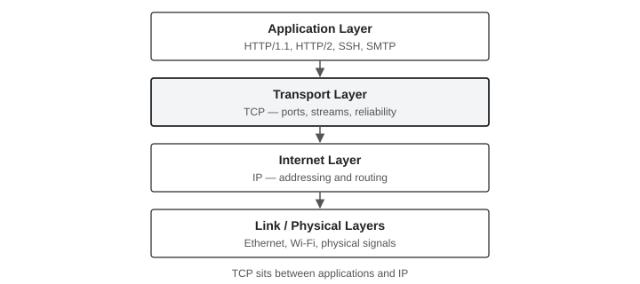
TCP belongs to Layer 4 of the OSI model (the Transport layer). It uses IP to move TCP segments between hosts.
Encapsulation: how application data travels
Suppose a browser sends an HTTP request.
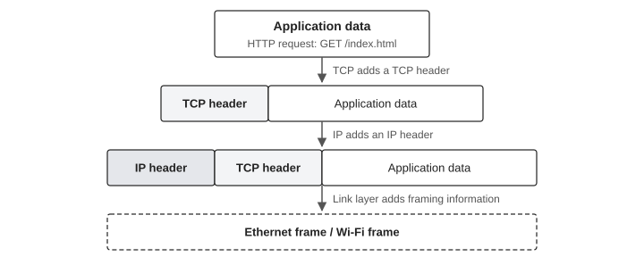
Each layer has a different responsibility.
TCP's IP protocol number is 6.
A TCP connection is identified by a four-tuple:
(Source IP, Source Port, Destination IP, Destination Port)Example:
| Field | Value |
|---|---|
| Source IP | 192.168.1.10 |
| Source port | 51000 |
| Destination IP | 203.0.113.20 |
| Destination port | 443 |
The client might be a browser using ephemeral port 51000, while the server listens on port 443.
A server can handle thousands of TCP connections on the same listening port because the complete four-tuple distinguishes individual connections.
A TCP connection also maintains two independent byte streams, one in each direction, with separate sequence-number spaces.
A TCP segment consists of a TCP header and an optional data payload.
TCP header — 32 bits per row
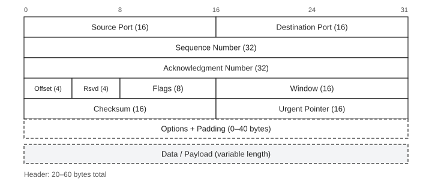
Header layout based on RFC 9293. The payload is not part of the header.
A TCP header is 20 bytes minimum and 60 bytes maximum, including optional fields.
TCP header fields explained
| Field | Size | Purpose |
|---|---|---|
| Source port | 16 bits | Identifies the sending application |
| Destination port | 16 bits | Identifies the receiving application |
| Sequence number | 32 bits | Identifies a position in the outgoing byte stream |
| Acknowledgment number | 32 bits | Identifies the next byte expected from the peer |
| Data offset | 4 bits | TCP header length in 32-bit words |
| Reserved | 4 bits | Reserved for future use |
| Control flags | 8 bits | Manage connection and data-transfer behavior |
| Window size | 16 bits | Advertised receive window |
| Checksum | 16 bits | Detects corruption |
| Urgent pointer | 16 bits | Position associated with urgent data |
| Options | 0–40 bytes | Optional features such as MSS, SACK, timestamps |
| Data | Variable | Actual application bytes |
The data offset is measured in 4-byte units. For instance, a data offset of 5 represents a 20-byte TCP header; a data offset of 8 represents a 32-byte TCP header.
TCP control flags
| Flag | Full name | Meaning |
|---|---|---|
| SYN | Synchronize | Establish a connection and synchronize sequence numbers |
| ACK | Acknowledgment | Indicates that the acknowledgment field is valid |
| FIN | Finish | Sender has finished sending data |
| RST | Reset | Abruptly reset a connection or reject a connection attempt |
| PSH | Push | Requests prompt delivery of buffered data |
| URG | Urgent | Indicates the urgent pointer is meaningful |
| ECE | ECN-Echo | Signals congestion notification information |
| CWR | Congestion Window Reduced | Indicates the sender responded to congestion feedback |
The flags are control bits, not separate TCP packet formats. For example, a segment can have both PSH and ACK enabled.
TCP options
| Option | Purpose |
|---|---|
| MSS | Negotiates maximum TCP payload size per segment in a direction |
| Window Scale | Allows advertised windows larger than 65,535 bytes |
| SACK Permitted | Negotiates Selective Acknowledgment support |
| SACK | Identifies received ranges of out-of-order data |
| Timestamp | Helps with RTT measurements and protection against old segments |
| NOP | One-byte padding/alignment |
| EOL | End of options list |
Window scaling and timestamps are specified in RFC 7323; SACK is specified in RFC 2018.
TCP checksum
TCP computes a 16-bit one's-complement checksum over the TCP header and data, together with a pseudo-header containing selected IP-layer information such as source and destination addresses.
The receiver verifies the checksum and discards invalid segments. TCP later recovers missing data through its reliability mechanisms.
The checksum detects accidental errors; it is not a cryptographic integrity check.
TCP communication generally follows three major phases.
Let's examine these operations at the packet level.
A three-way handshake establishes a TCP connection.
The three messages are:
Sequence diagram
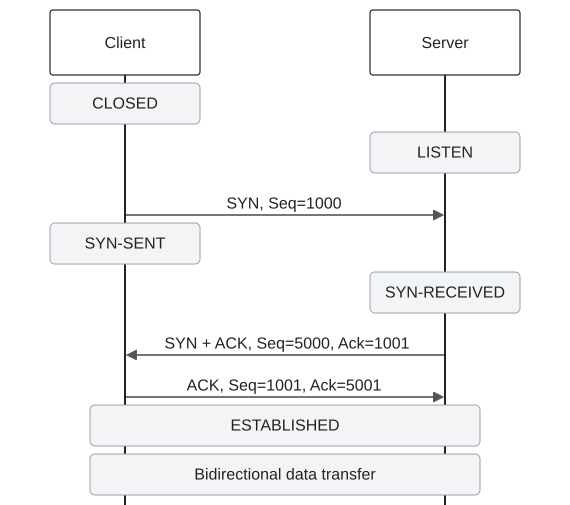
Step 1 — Client sends SYN
The client wants to connect to a server on port 8080.
It sends:
Client → Server
Flags = SYN
Sequence = 1000
Destination = 8080The number 1000 is an illustrative Initial Sequence Number (ISN).
The client enters the SYN-SENT state.
Step 2 — Server responds with SYN-ACK
The server acknowledges the client's SYN and announces its own ISN.
Server → Client
Flags = SYN, ACK
Sequence = 5000
Ack = 1001Why is the acknowledgment number 1001?
Because the client's SYN consumes one position in TCP's sequence-number space.
The server is effectively saying:
I received your SYN with sequence number 1000. My next expected sequence number from you is 1001. My initial sequence number is 5000.
The server enters SYN-RECEIVED.
Step 3 — Client sends final ACK
Client → Server
Flags = ACK
Sequence = 1001
Ack = 5001The client acknowledges the server's SYN.
Both endpoints can now reach the ESTABLISHED state.
Why three messages instead of two?
The three messages allow both endpoints to establish that their initial sequence-number information has been exchanged and acknowledged.
A two-message exchange would not provide the same confirmation that the initiator received the responder's SYN.
The handshake also helps reject old duplicate connection requests and negotiate TCP capabilities.
Important: A TCP connection is a logical connection maintained through endpoint state. TCP does not reserve a dedicated physical network path.
These two fields are fundamental to understanding reliability.
Sequence number
TCP assigns sequence numbers to bytes, not simply to packets.
Suppose the initial data sequence number is 1001, and the client sends 10 bytes.
Payload: ABCDEFGHIJ
Byte: A B C D E F G H I J
Seq: 1001 ... 1010The next data byte will have sequence number 1011.
For an ordinary data segment:
NextSeq=Seq+PayloadLength
SYN and FIN each consume one sequence number as well; ordinary pure ACKs do not.
Acknowledgment number
The acknowledgment number represents the next byte expected by the receiver.
If a client sends 10 bytes beginning at sequence number 1001:
Client → Server
SEQ = 1001
LEN = 10The server can respond:
Server → Client
ACK = 1011This cumulatively acknowledges receipt of all bytes through sequence number 1010.
It does not mean that only byte 1011 was received.
Complete handshake and data example
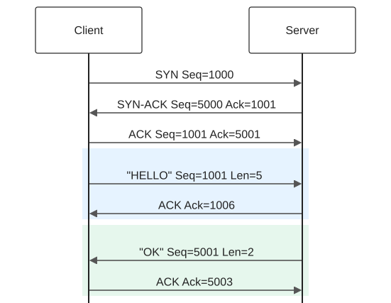
Observe that the client and server maintain independent sequence numbers.
Also, ACK=1006 does not necessarily mean the application has processed HELLO. It means the receiving TCP implementation has accepted the bytes into its receive stream.
Reliability is achieved using several cooperating mechanisms.
Sequence numbers
Every data byte has a position in the stream. This allows TCP to detect gaps, duplicate bytes, and out-of-order arrivals.
Cumulative acknowledgments
TCP normally uses cumulative ACKs.
Suppose the sender transmits three segments, each containing 500 bytes.
| Segment | Sequence numbers | Receiver ACK after in-order receipt |
|---|---|---|
| 1 | 1001–1500 | 1501 |
| 2 | 1501–2000 | 2001 |
| 3 | 2001–2500 | 2501 |
The receiver could also issue a single cumulative ACK of 2501 after all three have arrived.
Retransmission when data is lost
Consider a scenario where the second segment is lost.
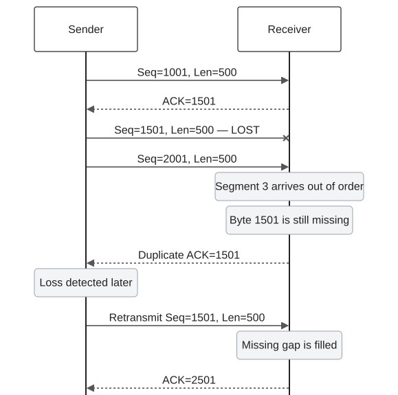
Here, the receiver may buffer segment 3, but it cannot deliver those out-of-order bytes to the application ahead of the missing bytes.
Once segment 2 is recovered, it can acknowledge through byte 2500.
How does TCP detect packet loss?
Two important approaches are:
Retransmission timeout (RTO)
The sender starts a timer for unacknowledged data. If a timeout occurs without sufficient acknowledgment, TCP retransmits outstanding data.
Fast retransmit
In classic TCP Reno behavior, the sender treats three duplicate ACKs as an indication of packet loss and retransmits without waiting for a timeout.
Modern TCP implementations can use more advanced loss-detection mechanisms.
Selective Acknowledgment (SACK)
Traditional cumulative ACKs only tell the sender which contiguous bytes have been received.
SACK adds information about out-of-order blocks.
Example:
Received: 1001–1500
Missing: 1501–2000
Received: 2001–2500Without SACK:
ACK = 1501With SACK, the receiver can communicate:
Cumulative ACK = 1501
SACK Block = [2001, 2501)The SACK block uses a half-open interval: it includes byte 2001 but excludes byte 2501.
The sender now knows that only the missing range requires recovery.
SACK is particularly valuable when multiple segments are lost within the same window.
RTT and retransmission timeout
TCP measures Round-Trip Time (RTT), which is approximately the elapsed time between sending data and receiving acknowledgment feedback.
A simplified RTT example:
Sender sends data t = 0 ms
Receiver gets data t = 25 ms
Sender receives ACK t = 60 ms
Measured RTT ≈ 60 msTCP does not simply use a fixed timeout equal to the most recent RTT. The standard RTO estimator accounts for smoothed RTT and RTT variation:
RTO=SRTT+max(G, 4×RTTVAR)
Where:
SRTT: smoothed round-trip timeRTTVAR: variation in observed RTTG: clock granularityRFC 6298 specifies the standard algorithm, including retransmission-timer backoff. Actual timeout values vary across implementations and network conditions.
Reliability has limits
TCP can retransmit when packets are lost, but cannot guarantee delivery if the peer permanently disappears, the network remains unavailable, or the connection fails.
Even when a write succeeds locally, the remote application may not have processed the data. This distinction is important when designing payment APIs and other operations that must avoid duplicate execution.
If TCP had to wait for an ACK after every segment, long-distance networks would perform poorly.
TCP therefore allows multiple bytes to remain outstanding before acknowledgments arrive.
This technique is called a sliding window.
Visual example
Suppose a sender is using a 4,000-byte sending window.
Initial window
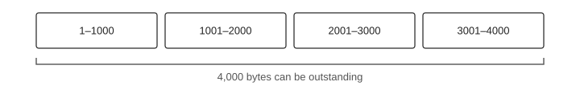
The sender transmits bytes 1–4000. The receiver then acknowledges the first 2,000 bytes.
ACK = 2001
Window slides forward
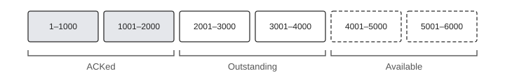
When the acknowledgment advances to 2001, the sender can remove acknowledged bytes from its outstanding-data accounting and transmit new bytes if the effective sending window permits.
Real TCP windows are byte-based, not necessarily divided into fixed 1,000-byte blocks.
Sliding windows support pipelining: multiple segments can be in transit simultaneously.
This is important because the sender's throughput may otherwise be limited by network round-trip time, even when the network has plenty of bandwidth.
Flow control answers this question:
How do we prevent a fast sender from overwhelming a slow receiver?
Consider a server sending data at 100 MB/s to a client application that can only process 10 MB/s.
Without flow control, the receiving buffer could fill up.
TCP solves this using the receiver's advertised window, commonly called rwnd.
How the receive window works
The receiver announces how much additional data it is currently willing to accept.
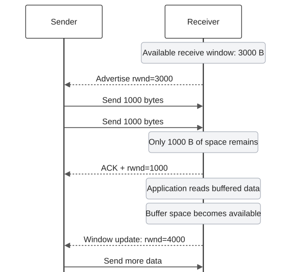
The advertised window is a form of receiver-side credit. It is related to receive-buffer capacity and the amount of data already buffered but not yet consumed.
If the receiver cannot accept more data, it may advertise:
Window Size = 0The sender must then respect the closed receive window.
When new space becomes available, transmission can resume. TCP's persist mechanism and zero-window probes help prevent a connection from becoming permanently stuck if a window-update message is lost.
Window scaling
The TCP header's window field contains only 16 bits, so its unscaled maximum is:
216−1=65,535 bytes
That is insufficient for high-bandwidth, high-latency connections.
TCP's Window Scale option allows the window value to be interpreted using a negotiated shift count:
ActualWindow=HeaderWindow×2ScaleFactor
For example, with a window field of 32,000 and a scale factor of 7:
ActualWindow=32,000×128
=4,096,000 bytes
The window scale factor is negotiated using SYN segments; it is not renegotiated for each data segment.
Flow control and congestion control are different.
Flow control protects the receiver.
Congestion control protects the network.
Even if the receiver can accept 10 MB of data, routers along the network path might not have enough capacity to handle it all at once.
TCP therefore maintains a separate congestion window, called cwnd.
Receive window vs congestion window
| Attribute | Receive window (rwnd) | Congestion window (cwnd) |
|---|---|---|
| Protects | Receiver | Network |
| Controlled by | Receiving endpoint | Sending endpoint |
| Based on | Receive-buffer availability | Congestion feedback and algorithm |
| Communicated through | TCP window field | Local sender state |
| Can restrict sending? | Yes | Yes |
The sender is constrained by both.
A useful simplified relationship is:
EffectiveWindow=min(rwnd,cwnd)
If the receiver advertises 8,000 bytes but congestion control allows only 3,000 bytes, the sender's effective outstanding-data limit is 3,000 bytes.
Example: which window controls transmission?
If 1,000 bytes are already outstanding, approximately 2,000 additional bytes of window capacity remain, subject to the precise TCP sequence and window state.
Slow start
Slow start is a congestion-control phase used to increase the sending rate quickly while learning about network capacity.
Conceptually, with an initial congestion window of 1 MSS:
| RTT round | Congestion window |
|---|---|
| 0 | 1 MSS |
| 1 | 2 MSS |
| 2 | 4 MSS |
| 3 | 8 MSS |
| 4 | 16 MSS |
This is a simplified illustration, not the required modern initial congestion window.
As acknowledgments arrive, cwnd grows. In traditional slow start, its growth is roughly exponential per RTT until a threshold or congestion signal is encountered.
Congestion avoidance
After slow start, TCP uses a congestion-avoidance algorithm to continue increasing its sending rate more cautiously.
Classic TCP Reno uses Additive Increase / Multiplicative Decrease (AIMD).
Conceptually:
Fast retransmit and fast recovery
In traditional Reno-style congestion control, three duplicate ACKs trigger a fast retransmission and a reduction in the congestion window.
Fast recovery allows transmission to continue without restarting at the smallest possible sending window.
A retransmission timeout generally indicates a more serious lack of delivery feedback and causes stronger recovery behavior.
Modern congestion-control algorithms
| Algorithm | General approach |
|---|---|
| TCP Reno | Classic loss-based AIMD |
| CUBIC | Cubic congestion-window growth, designed for higher-speed networks |
| BBR | Uses bandwidth and RTT estimates to model delivery capacity |
Different operating systems and configurations may use different congestion-control algorithms.
CUBIC is standardized in RFC 9438 and can be more aggressive than Reno during congestion avoidance.
Explicit Congestion Notification (ECN)
ECN permits network equipment to signal congestion by marking eligible packets rather than necessarily dropping them.
TCP can use this information to reduce its sending rate.
This can improve behavior on networks that support ECN correctly.
TCP is a byte-stream protocol, but IP carries packets. TCP therefore divides application data into segments suitable for transmission.
MTU — Maximum Transmission Unit
MTU is the maximum size of an IP packet that can be carried by a link without additional link-specific fragmentation.
A common Ethernet IP MTU is 1,500 bytes.
MSS — Maximum Segment Size
MSS is the maximum TCP data payload size a TCP endpoint offers to receive in one segment.
For a typical IPv4 path with a 1,500-byte MTU and no IP/TCP options:
MSS=MTU−IPHeader−TCPHeader
MSS=1500−20−20=1460 bytes
Example: 1,500-byte IPv4 packet
Illustrative sizes for a simple IPv4 packet without options.
With IPv6's 40-byte base header and a 20-byte TCP header, a 1,500-byte MTU gives a typical MSS of 1,440 bytes.
Real payload sizing must account for path MTU, encapsulation, options, and other overhead.
Segmentation example
Suppose an application writes 5,000 bytes and the effective MSS is 1,460 bytes.
TCP might segment the data as:
| Segment | Payload size |
|---|---|
| 1 | 1,460 B |
| 2 | 1,460 B |
| 3 | 1,460 B |
| 4 | 620 B |
| Total | 5,000 B |
This is illustrative. The exact segmentation depends on the operating system, sending buffers, congestion state, and other factors.
Important: A single application write() does not necessarily produce a single TCP segment.
TCP supports graceful shutdown as well as abrupt connection resets.
Graceful termination: four-way handshake
A typical graceful shutdown uses four control messages.
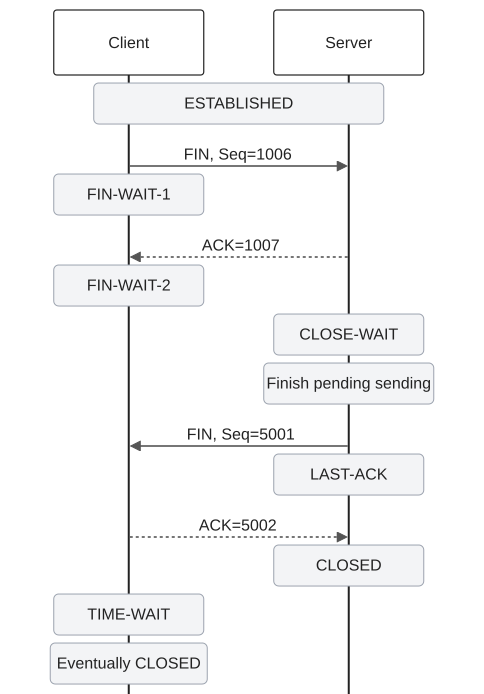
This example assumes the client previously sent five data bytes after its SYN, and the server sent no application data.
Why four steps?
Because TCP supports full-duplex communication.
Each direction can be closed independently.
When the client sends FIN, it says:
I will not send any more data.
That does not mean the server must immediately stop sending data.
The server can acknowledge the client's FIN, finish transmitting its remaining bytes, and send its own FIN afterward.
The server may also combine its ACK and FIN when appropriate, resulting in fewer than four packets.
TCP half-close
TCP allows one direction to close while the other direction remains open.
Example:
Client Server
| |
|---- Request data ----------->|
|---- FIN -------------------->|
| |
|<------ Response data --------|
|<------ FIN ------------------|
|---- ACK -------------------->|This is useful for protocols in which one endpoint finishes submitting a request but still needs to receive a response.
Why TIME-WAIT exists
The endpoint performing the active close typically enters TIME-WAIT.
It serves two important purposes:
The traditional TIME-WAIT duration is twice the Maximum Segment Lifetime (2×MSL). Its actual duration is implementation-specific, not universally a fixed number of seconds.
Abrupt termination with RST
RST means Reset.
A TCP reset can be used to abruptly terminate a connection or reject a connection attempt.
Examples include a connection attempt to a closed port or an endpoint that aborts a connection.
| FIN | RST |
|---|---|
| Graceful shutdown of one sending direction | Abrupt connection reset |
| Allows orderly handling of queued data | Can discard undelivered buffered data |
| Supports half-close | Aborts the connection |
| Normal stream-ending mechanism | Error or abort mechanism |
An application should not assume that data written immediately before an abrupt reset was delivered successfully.
TCP maintains a state machine for each connection.
| State | Meaning |
|---|---|
| CLOSED | No active connection |
| LISTEN | Server is waiting for incoming connections |
| SYN-SENT | SYN transmitted, awaiting handshake response |
| SYN-RECEIVED | SYN received and SYN-ACK sent |
| ESTABLISHED | Connection established; normal data transfer |
| FIN-WAIT-1 | Local FIN sent, waiting for acknowledgment or peer FIN |
| FIN-WAIT-2 | Local FIN acknowledged, waiting for peer FIN |
| CLOSE-WAIT | Peer FIN received; local application has not finished closing |
| CLOSING | Both endpoints initiated closing before acknowledging each other's FIN |
| LAST-ACK | Local FIN sent after peer close; waiting for final ACK |
| TIME-WAIT | Waiting before completely removing connection state |
Typical client and server transitions
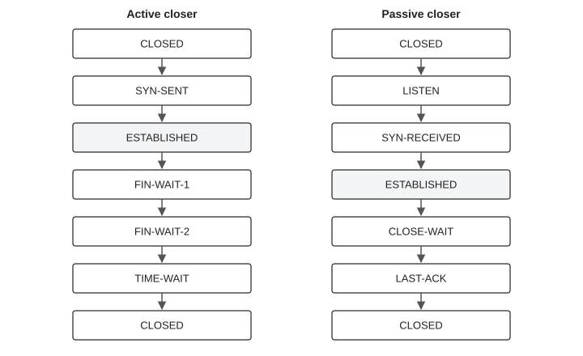
These are typical paths, not the complete state-transition graph. Simultaneous open and simultaneous close introduce additional transitions.
Production debugging: CLOSE-WAIT vs TIME-WAIT
A large number of CLOSE-WAIT sockets often indicates that the application has not closed connections after the peer finished its sending direction.
A large number of TIME-WAIT sockets may result from frequent short-lived connections. It is not automatically evidence of a bug, but can contribute to connection-management and ephemeral-port pressure at high rates.
This is one of the most important TCP concepts for backend developers.
Suppose a Java application executes:
outputStream.write("Hello".getBytes());
outputStream.write("World".getBytes());The programmer made two write calls.
However, TCP does not preserve those two calls as separate messages.
The receiver might observe:
read #1 → "HelloWorld"Or:
read #1 → "Hel"
read #2 → "loWor"
read #3 → "ld"Or some other partition of the same ordered bytes.
All of these outcomes are valid.
TCP guarantees that the received bytes will be in the correct order, not that each read() corresponds to one write().
How applications define message boundaries
Applications implement their own framing rules, such as:
| Technique | Example |
|---|---|
| Fixed-length | Every message is exactly 128 bytes |
| Length-prefixed | Four bytes specify the length of the following message |
| Delimiter-based | Each message ends with \n |
| Structured protocol framing | HTTP/2 frames, custom binary protocol frames |
For example, a length-prefixed protocol could transmit:
+-------------------+------------------------+
| Length (4 bytes) | Message body |
+-------------------+------------------------+
| 00 00 00 05 | H E L L O |
+-------------------+------------------------+The receiver reads exactly four bytes to determine the length and then reads the specified number of payload bytes.
This is also why a single InputStream.read() is not guaranteed to return all bytes requested. Applications must handle partial reads correctly.
TCP is usually implemented in the operating system's networking stack.
The application primarily interacts with it through sockets.
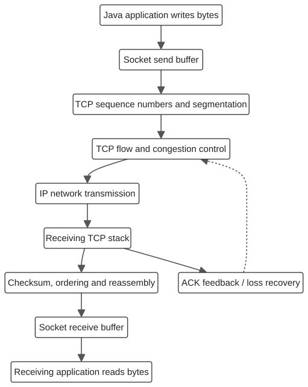
Sender-side processing
When an application sends data:
A successful application-level write generally means the local socket API accepted the bytes. It does not prove that the remote application processed them.
Receiver-side processing
When segments arrive:
Acknowledgment generation is part of the receiving TCP stack; it does not require the application to manually send ACK messages.
Let's implement a TCP client and server that communicate using a custom length-prefixed protocol.
This is more useful than a basic single-line echo example because it demonstrates how to handle TCP stream framing correctly.
Architecture
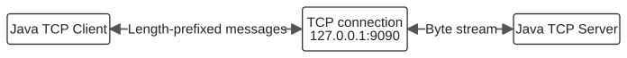
TCP server — TcpServer.java
import java.io.*;
import java.net.*;
import java.nio.charset.StandardCharsets;
public class TcpServer {
private static final int MAX_MESSAGE_SIZE = 1024 * 1024;
public static void main(String[] args) throws IOException {
try (ServerSocket server = new ServerSocket(9090)) {
System.out.println("TCP server listening on port 9090");
while (true) {
Socket socket = server.accept();
System.out.println(
"Connected: " + socket.getRemoteSocketAddress()
);
new Thread(() -> handleClient(socket)).start();
}
}
}
private static void handleClient(Socket socket) {
try (
socket;
DataInputStream in = new DataInputStream(
new BufferedInputStream(socket.getInputStream())
);
DataOutputStream out = new DataOutputStream(
new BufferedOutputStream(socket.getOutputStream())
)
) {
while (true) {
int length;
try {
length = in.readInt();
} catch (EOFException e) {
break; // Client ended its stream
}
if (length < 0 || length > MAX_MESSAGE_SIZE) {
throw new IOException("Invalid message length");
}
byte[] bytes = new byte[length];
in.readFully(bytes);
String message = new String(
bytes, StandardCharsets.UTF_8
);
System.out.println("Received: " + message);
byte[] response = (
"Server received: " + message
).getBytes(StandardCharsets.UTF_8);
out.writeInt(response.length);
out.write(response);
out.flush();
}
} catch (IOException e) {
System.err.println(
"Connection ended: " + e.getMessage()
);
}
}
}TCP client — TcpClient.java
import java.io.*;
import java.net.*;
import java.nio.charset.StandardCharsets;
public class TcpClient {
public static void main(String[] args) throws IOException {
try (Socket socket = new Socket()) {
socket.connect(
new InetSocketAddress("127.0.0.1", 9090),
5000
);
socket.setSoTimeout(5000);
DataOutputStream out =
new DataOutputStream(socket.getOutputStream());
DataInputStream in =
new DataInputStream(socket.getInputStream());
String[] messages = {
"Hello TCP",
"Second message"
};
for (String message : messages) {
byte[] payload = message.getBytes(
StandardCharsets.UTF_8
);
out.writeInt(payload.length);
out.write(payload);
out.flush();
int responseLength = in.readInt();
if (responseLength < 0 ||
responseLength > 1024 * 1024) {
throw new IOException("Invalid response length");
}
byte[] response = new byte[responseLength];
in.readFully(response);
System.out.println(
new String(response, StandardCharsets.UTF_8)
);
}
}
}
}Run the example
In separate terminals:
javac TcpServer.java TcpClient.java
# Terminal 1
java TcpServer
# Terminal 2
java TcpClientExpected client output:
Server received: Hello TCP
Server received: Second messageHow this maps to TCP
| Java operation | TCP/networking behavior |
|---|---|
new ServerSocket(9090) | Creates and binds a listening socket |
server.accept() | Returns a socket for an established connection |
socket.connect(...) | Initiates connection establishment |
getOutputStream().write(...) | Writes bytes into the TCP sending path |
getInputStream().read(...) | Reads bytes from TCP's receive stream |
readFully(...) | Waits for the requested byte count or throws on premature EOF |
socket.close() | Closes the socket; normally initiates graceful shutdown |
setSoTimeout(5000) | Sets a timeout for blocking socket reads |
The operating system handles TCP sequence numbers, packet-level ACKs, windows, and retransmissions automatically.
The Java application does not implement these mechanisms.
The example uses a thread per accepted connection for clarity. Production servers with large connection counts may use Java virtual threads, nonblocking NIO, Netty, or another scalable networking framework.
Bandwidth-delay product (BDP)
BDP measures the amount of data that can be in flight on a network path if the sender is to use its available bandwidth efficiently.
BDP=Bandwidth×RTT
For a 100 Mbps path with an RTT of 100 ms:
BDP=100,000,000×0.1/8
BDP=1,250,000 bytes
This is approximately 1.25 MB.
To utilize that path fully, TCP generally needs sufficient outstanding-data capacity, along with an appropriate congestion window, receive window, and application sending rate.
A very small window can limit throughput regardless of link speed.
Nagle's algorithm
Nagle's algorithm reduces the transmission of many tiny TCP segments by limiting when small amounts of new data can be transmitted while previous data remains unacknowledged.
It can improve efficiency but may add latency for some interactive workloads.
Java provides:
socket.setTcpNoDelay(true);Setting TCP_NODELAY disables Nagle's algorithm on supported TCP stacks.
This does not disable TCP reliability, and it does not guarantee that each write produces a separate segment.
Delayed acknowledgments
TCP receivers may delay certain ACKs briefly to reduce protocol overhead or allow an acknowledgment to accompany outgoing data.
The exact policy depends on the TCP implementation.
For some small-message applications, interactions between delayed ACKs and Nagle's algorithm can contribute to additional latency.
TCP keepalive
A TCP connection can become unusable without an endpoint immediately knowing, for example after an abrupt network failure.
TCP keepalive can send probes on idle connections to help detect unresponsive peers.
Java:
socket.setKeepAlive(true);Keepalive behavior, intervals, and retry limits depend on the operating system and configuration.
Application-level heartbeats and timeouts are often necessary when faster failure detection is required.
Head-of-line blocking
TCP guarantees ordered byte-stream delivery.
That means later bytes cannot be delivered to the application ahead of missing earlier bytes, even if the later segments have already arrived.
This is called transport-level head-of-line (HOL) blocking.
It is especially relevant to HTTP/2, which multiplexes multiple logical streams over a single TCP connection.
HTTP/3 instead uses QUIC, which runs over UDP and provides separate reliable streams without TCP's cross-stream transport-level ordering constraint.
TCP Fast Open
Traditional TCP establishment requires a three-way handshake before normal application data transfer.
TCP Fast Open is an extension that can permit data to be included during connection establishment in supported circumstances.
It has deployment, security, and replay considerations and is not a universal replacement for the standard handshake.
The most effective way to understand TCP is to examine actual packet captures.
On Linux, two useful tools are ss and tcpdump.
Inspect TCP sockets
ss -tanpThis displays TCP socket information, including connections and their states.
For additional internal TCP statistics:
ss -tiDepending on the system and connection state, this can show information such as RTT, congestion-control state, MSS, and congestion-window details.
Capture TCP traffic
Capture traffic on the example Java server's port:
sudo tcpdump -i lo -nn -S 'tcp port 9090'Here:
-i lo captures loopback traffic.-nn avoids hostname and service-name resolution.-S prints absolute TCP sequence numbers.For other interfaces, replace lo with an appropriate interface or use any where supported.
Example packet sequence
A simplified capture might show:
Client → Server [SYN] Seq=1000
Server → Client [SYN,ACK] Seq=5000 Ack=1001
Client → Server [ACK] Seq=1001 Ack=5001
Client → Server [PSH,ACK] Seq=1001 Len=100
Server → Client [ACK] Ack=1101
Client → Server [FIN,ACK] Seq=1101
Server → Client [ACK] Ack=1102
Server → Client [FIN,ACK] Seq=5001
Client → Server [ACK] Ack=5002The exact trace will vary. For instance, ACKs may be delayed or piggybacked, segmentation may differ, and FIN/ACK messages may be combined.
Wireshark filters
In Wireshark you can use these display filters:
| Filter | Purpose |
|---|---|
tcp | Show TCP packets |
tcp.port == 9090 | Show traffic involving port 9090 |
tcp.flags.syn == 1 | Show segments with SYN set |
tcp.flags.fin == 1 | Show FIN segments |
tcp.flags.reset == 1 | Show TCP resets |
tcp.analysis.retransmission | Identify packets marked as retransmissions by Wireshark |
tcp.analysis.duplicate_ack | Identify duplicate-ACK analysis events |
Wireshark's TCP analysis uses heuristics, so its interpretations should be considered alongside the capture location, timing, and operating-system offload behavior.
UDP is another major transport-layer protocol, but it provides a much simpler communication service.
| Feature | TCP | UDP |
|---|---|---|
| Connection | Connection-oriented | Connectionless |
| Delivery reliability | Built in | Not built in |
| Ordering | Ordered byte stream | No built-in ordering |
| Data model | Byte stream | Datagrams |
| Retransmission | Built in | Application/protocol responsibility |
| Flow control | Built in | Not built in |
| Congestion control | Built in | Not built into UDP itself |
| Header size | 20–60 bytes | 8 bytes |
| Handshake | Usually three-way | No UDP handshake |
| Typical applications | HTTPS over TCP, SSH, SMTP, databases | DNS, real-time applications, QUIC |
UDP does not inherently mean unreliable applications. A protocol running over UDP can implement its own reliability and congestion control, as QUIC does.
Use TCP when ordered, reliable byte-stream delivery is useful. Use UDP-based protocols when their datagram or custom transport semantics better match the application's needs.
TCP's reliability features should not be confused with security.
SYN flood attacks
An attacker can send many SYN requests to consume resources associated with pending connections.
SYN cookies and other defensive mechanisms can help reduce the impact of these attacks.
TCP reset attacks
Forged or otherwise unauthorized reset segments can potentially disrupt connections under certain conditions.
Modern stacks use validation and sequence-number checks to reduce exposure.
TCP session interception
TCP itself does not encrypt data.
For confidential communication, applications normally use TLS:
Application protocol
↓
TLS
↓
TCP
↓
IPTLS provides encrypted communication and integrity protection, and commonly authenticates the server.
Application-level idempotency
A particularly important distributed-systems principle is that TCP's reliable byte delivery does not guarantee exactly-once business execution.
Suppose a payment client sends a request and then loses the connection before receiving the response.
The payment might have been processed successfully, even though the client did not receive confirmation.
The client cannot determine the business outcome from TCP failure alone.
Applications therefore need mechanisms such as idempotency keys, transaction identifiers, and durable processing records.
Consider a browser accessing a website using HTTPS over TCP.
443, using a TCP three-way handshake.This describes HTTPS over TCP, such as HTTP/1.1 or HTTP/2. HTTP/3 uses QUIC over UDP instead.
| Misconception | Correct explanation |
|---|---|
| TCP assigns sequence numbers to packets | TCP sequence numbers identify byte positions |
| One write equals one TCP segment | TCP may split or combine writes |
| One read returns one complete message | TCP has no inherent application-message boundaries |
| ACK means the application processed the request | ACK generally confirms receipt by the TCP stack |
| TCP always delivers every byte | TCP can fail; reliability does not imply perpetual connectivity |
| TCP windows and congestion windows are identical | They control receiver capacity and network congestion separately |
| SYN and FIN are ordinary data bytes | They consume sequence-number space but are control signals |
| TCP is encrypted | TLS or another security layer is needed |
| TCP connections use dedicated paths | Connections are logical endpoint state, not dedicated circuits |
| All TCP algorithms behave exactly like Reno | Congestion and loss-recovery implementations can differ |
| Term | Definition |
|---|---|
| Segment | TCP header plus optional data |
| ISN | Initial Sequence Number |
| SEQ | TCP sequence number |
| ACK | TCP acknowledgment |
| MSS | Maximum Segment Size |
| MTU | Maximum Transmission Unit |
| RTT | Round-Trip Time |
| RTO | Retransmission Timeout |
rwnd | Receiver's advertised window |
cwnd | Sender's congestion window |
ssthresh | Slow-start threshold |
| SACK | Selective Acknowledgment |
| ECN | Explicit Congestion Notification |
| BDP | Bandwidth-Delay Product |
| FIN | Graceful end of one sending direction |
| RST | TCP connection reset |
| TIME-WAIT | State for handling late packets/final-ACK recovery |
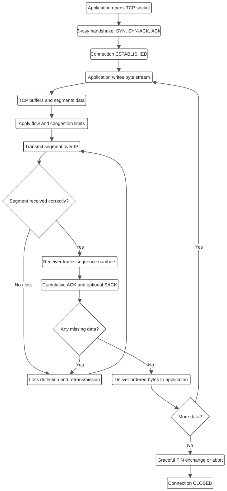
Conceptual lifecycle: ACK processing, retransmission, and bidirectional sending happen concurrently in real TCP implementations.
These are the most useful primary references:
Final takeaway
To understand TCP deeply, focus on five mechanisms and how they interact:
Connection management establishes and closes endpoint state. Sequence numbers and acknowledgments make an ordered, reliable byte stream possible. Retransmission recovers missing data. Flow control protects the receiver. Congestion control protects the network.
Together, these mechanisms allow applications such as HTTP services, database clients, SSH sessions, and distributed-system components to exchange data reliably over an otherwise best-effort IP network.